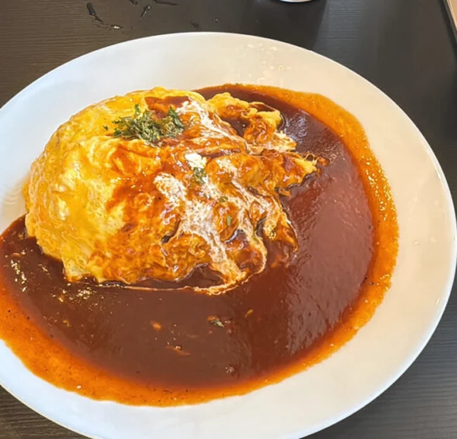

東京・中村橋
オムライスのお昼から、自家製の前菜とワインの夜まで。

ランチ
ピラフをふんわり包む鳳凰卵。ソースは一日煮込んだ自家製デミグラスと、トマトから選べます。
ディナー
パテ・ド・カンパーニュや季節の前菜を盛り合わせに。ワインを一杯、ゆっくりと。お食事には肉料理やリゾットも。
アクセス
西武池袋線 中村橋駅南側出口から徒歩約3分
営業日や臨時のお知らせはInstagramでご確認ください。